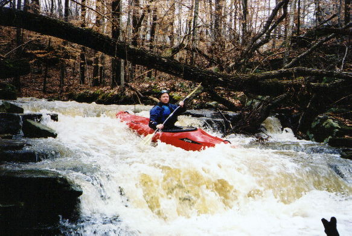
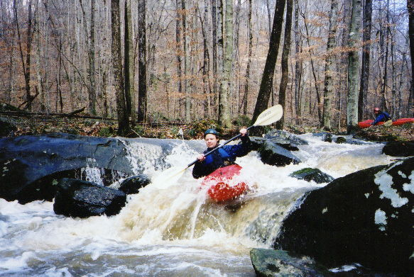
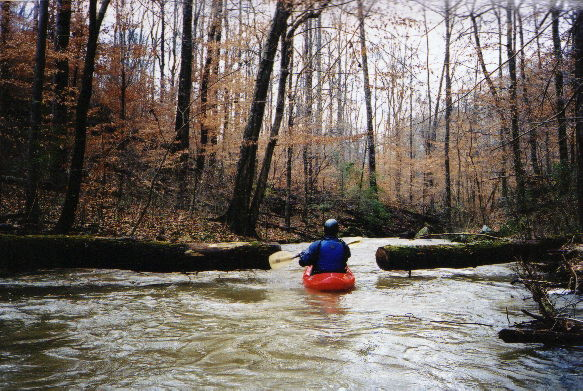
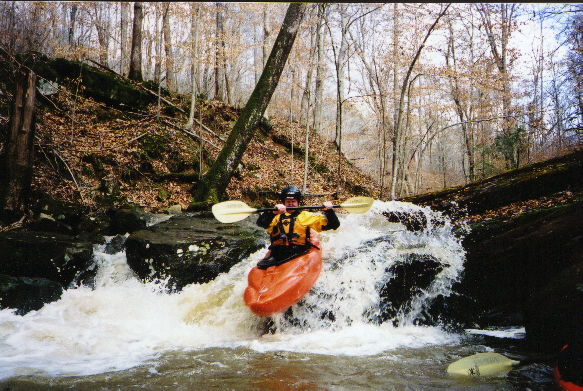
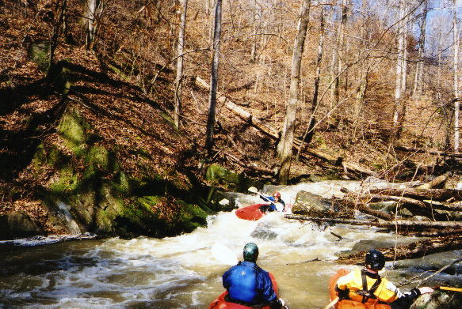
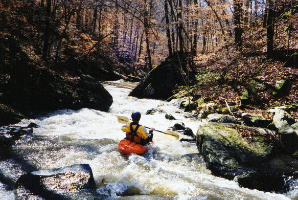

|  | Wade, already looking ill over the low water, on a slide very early into Rice. |
|  | More Wade, almost smiling. |
|  | Log removal techniques were proven out once again. |
|  | Brian on one of the cooler rapids |
|  | Shane playing rib cage tag with a poorly
positioned rock. The token C-1er walked this one.
|
|  | Brian at a decent drop towards the bottom
that actually had almost enough water.
|